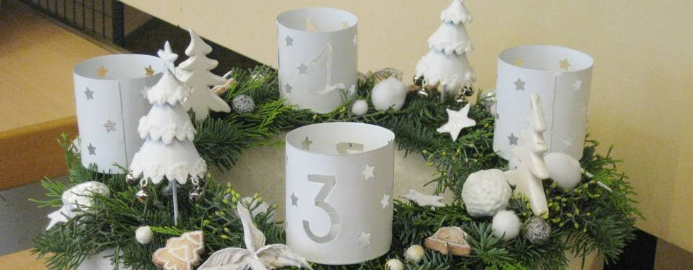

- Cet événement est terminé
Atelier couronnes de l’Avent
26 novembre 2025 à 14 h 00 min - 27 novembre 2025 à 17 h 00 min
Navigation de l'événement

Venez participer à l’atelier couronnes de l’Avent et laissé vous guider pour donner une touche personnelle à vos décorations de décembre.
Du matériel diversifié sera mis à votre disposition pour pouvoir trouver de quoi réaliser harmonieusement des couronnes de l’avent et autres arrangements. De quoi avoir le plaisir de donner sa touche personnelle à sa maison et sa table.
Venez équipés de pinces, sécateur et autre matériel de bricolage.
Participation : 10 €.
Réservation auprès du service Animation de la Ville : 03 88 19 23 73 ou manifestations@ville-hoenheim.fr.